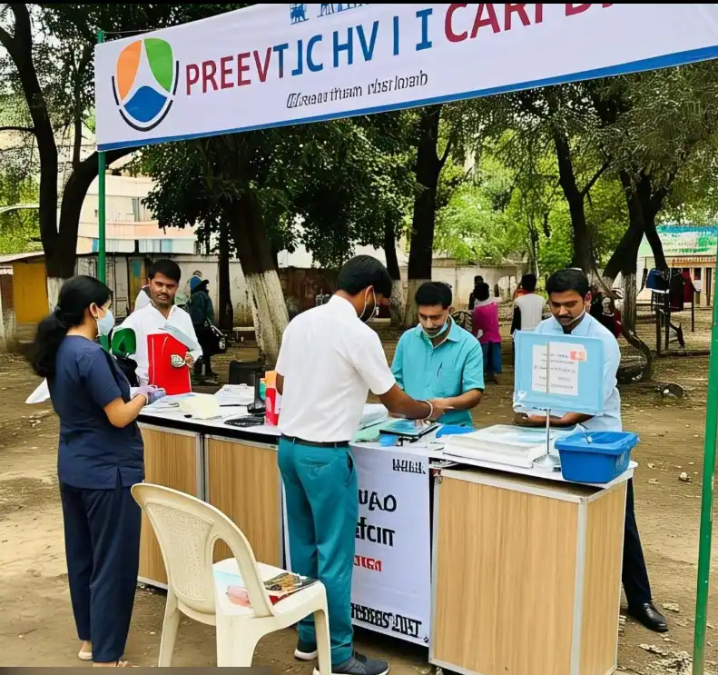
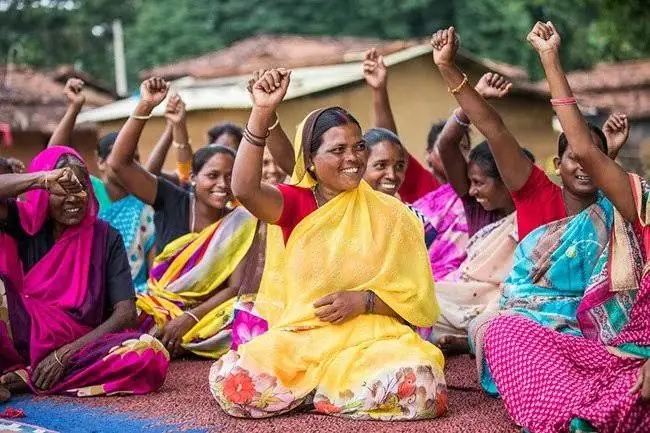
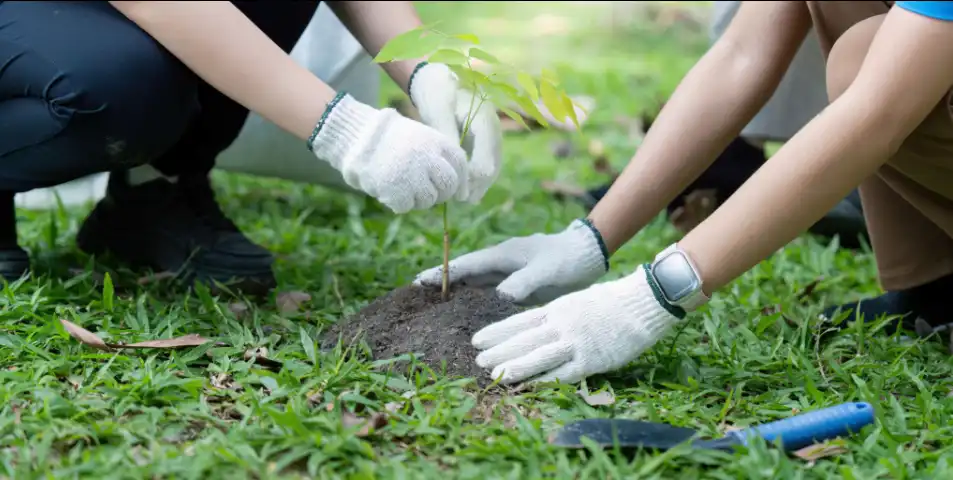
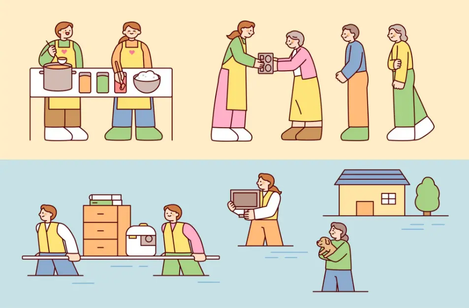

Five core program areas, each designed to address root causes of poverty and inequality — not just the symptoms.
We believe education is the most powerful tool for breaking the cycle of poverty. Our education programs reach children and adults in 24 countries, providing quality learning environments, trained teachers, and digital resources.

Our healthcare team deploys mobile clinics, trains community health workers, and runs maternal health programs that have dramatically reduced child mortality in our target regions.

Gender equality is central to sustainable development. Our women's programs provide economic tools, safe spaces, legal support, and platforms for women to lead their own communities.

Climate change disproportionately affects the world's poorest communities. Our environment programs restore ecosystems, provide clean energy, and build climate resilience where it's needed most.

When disaster strikes — floods, earthquakes, conflict, drought — STACKLY deploys rapid response teams within 72 hours. We provide immediate relief and stay to support long-term recovery.
Every donation, every volunteer hour, every shared post amplifies our impact.